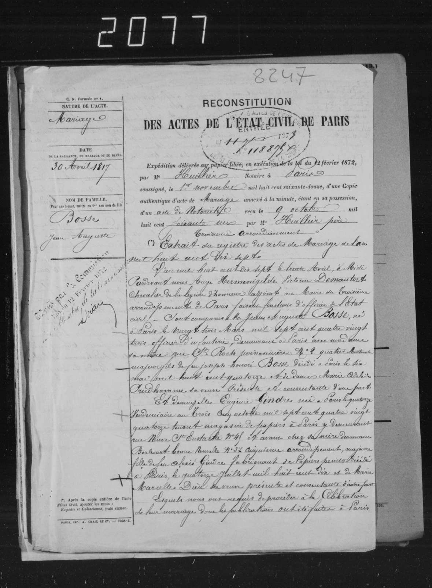

Acte d'état civil
Mariage de Jean Auguste Bosse et Eugénie Gindre, 30 avril 1817, 3e arrondissement ancien : extrait authentique de l'acte, délivré le 1er novembre 1872 par Me Huillier, notaire, d'après une copie annexée à une minute notariale (acte de notoriété du 9 octobre 1871), servant au rétablissement
Ce document établit
- Alexis Gindre, fabricant de papiers peints, est mort à Paris le 14/07/1810 ; sa veuve, Marie Marcelle Dieu, est vivante le 30/04/1817, domiciliée boulevard Bonne-Nouvelle, 5e arrondissement ancien vérifié A0814
« « fille de feu Alexis Gindre, fabriquant de papiers peints, décédé à Paris le quatorze juillet mil huit cent dix, et de Marie Marcelle Dieu sa veuve présente et consentante » »
- Eugénie Gindre est née à Paris le 14 vendémiaire an III (05/10/1794) ; en 1817 elle tient un magasin de papiers rue Neuve Saint-Eustache n° 4[5 ?] ; sa mère demeure boulevard Bonne-Nouvelle n° 3[7 ?] ; elle est fille d'Alexis Gindre et de Marie Marcelle Dieu vérifié A0815
« « Demoiselle Eugénie Gindre née à Paris le quatorze vendémiaire an trois (cinq octobre mil sept cent quatre vingt quatorze) tenant magasin de papiers à Paris y demeurant rue Neuve St Eustache n° 4[5 ?] et ayant chez sa mère demeurant Boulevard Bonne Nouvelle n° 3[7 ?] cinquième arrondissement » »
- L'Alexis Gindre mort le 14/07/1810 et la Marie Marcelle Dieu de l'acte de 1817 sont les parents de Marie Joséphine Gindre (Sosa 23) ; l'hypothèse A0311 est établie vérifié A0816
« « fille de feu Alexis Gindre … et de Marie Marcelle Dieu sa veuve » (1817) ; « fille de Alexis Gindre, décédé, et de Marie Marcelle Dieu » (1824, A0813) »
- Eugénie Gindre (née en 1794) est la sœur de Marie Joséphine Gindre (Sosa 23) partiellement vérifié A0817
« « fille de feu Alexis Gindre … et de Marie Marcelle Dieu » »
- Au mariage de 1817, François Vincent Bridet, huissier au tribunal de première instance, 50 ans, est le cousin maternel de la mariée ; Joseph Dufour, fabricant de papiers peints, 62 ans, est son ami ; Marie Marcelle Dieu, la mère, signe « M.M. Dieu » vérifié A0818
« « François Vincent Bridet âgé de cinquante ans huissier au tribunal de première instance demeurant rue des Fossés St Germain l'Auxerrois n° 3 cousin maternel de l'épouse » ; « Joseph Dufour fabricant de papiers peints âgé de soixante deux ans » »
Personnes concernées
Copie d'un acte de mariage, non l'original brûlé en 1871 ; l'extrait donne l'acte entier avec témoins. Même fiche et même liasse que le mariage Lesné × Maureaux (images 40-43), sans rapport.